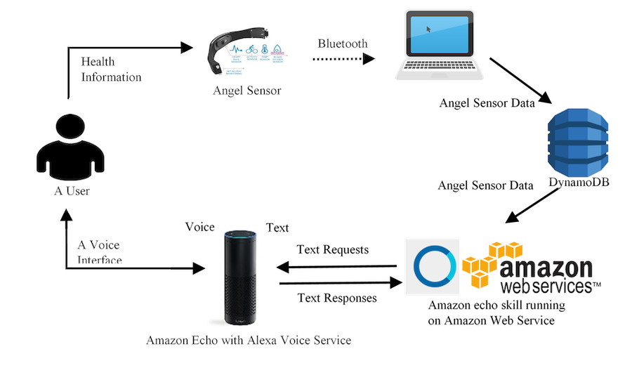
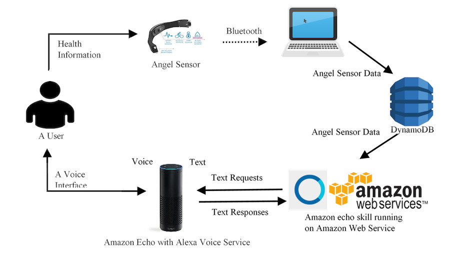
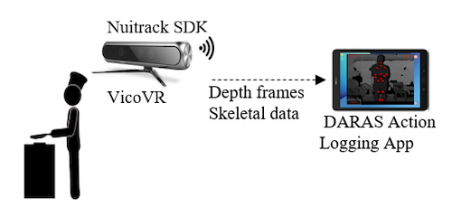
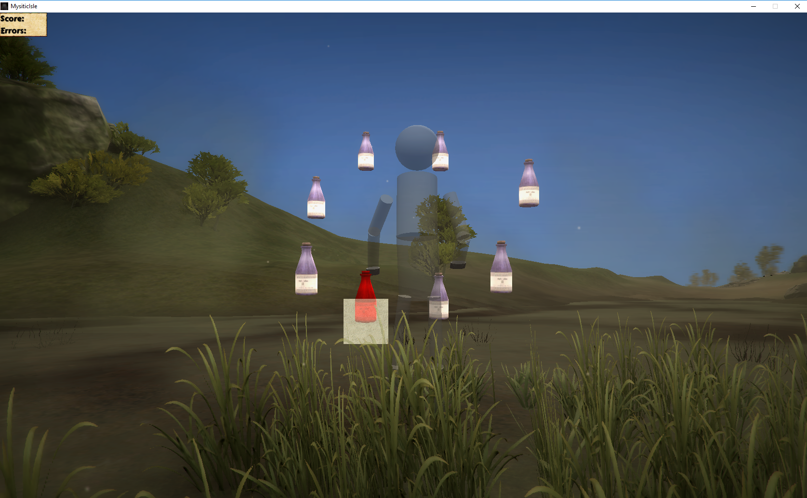

Your personal doctor
Make your Amazon echo to be your personal doctor.
I'm a research engineer has a strong interest in healthcare applications with a background of embedded system, machine learning and computer vision. I love playing with data and new techologies. I have been working on healthcare-related projects in Center for Eldercare & Rehabilitation Technology since 2016. Our mission is to create technology for proactive healthcare.
Help people with technologies!
Your personal doctor
Make your Amazon echo to be your personal doctor.
A mobile-based Action monitoring system
Detect and assess daily motions.
A VR rehabilitation game
Assess the movements in a VR game.
Share your thoughts!
Pinnacles Youth Park
Sat 20 April 2019
An adventure at Pinnacles Youth Park
Food
Thr 18 April 2019
Try to eat your pineapples in a new way!
VicoVR sensor
Mon 15 April 2019
A demo on retrieving data from the VicoVR sensor.